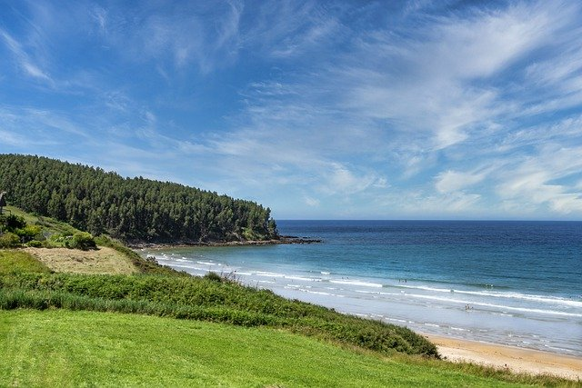

Genießen Sie die Idylle der Natur!
- Traumhafte Seen
- Weitläufige Strände
- Artenreiche Wälder
- Wilde Tiere
Egal ob mit Kindern oder alleine. Bei uns finden Sie garantiert den passenden Urlaub. Wandern Sie durch dichte Wälder und beobachten Sie wilde Tiere in ihrer natürlichen Umgebung. Genießen Sie die herrliche Seen oder wandern sie weitläufige Strände entlang. Abend kehren Sie dann in Ihre gemütliche Unterkunft zurück und lassen sich kulinarisch verwöhnen. Wir machen es möglich.